渋柿を大量に収穫しました。
2024/11/10
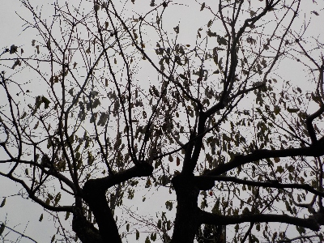
木にある渋柿をほぼ収穫しました。
食べ物を粗末にしないのは気分がいいです。これから毎日合わせ柿を食べます。
2024/11/10

木にある渋柿をほぼ収穫しました。
食べ物を粗末にしないのは気分がいいです。これから毎日合わせ柿を食べます。
2024/10/27
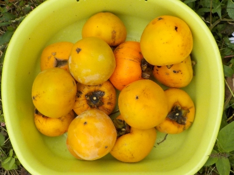
カラスが柿を食べてる現場を見てしまいました。
このままにしておいてはいけないと思い、まだ少し青いものもありますが収穫しました。
2023/11/19
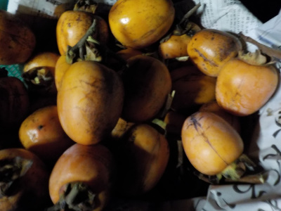
合わせ柿も食べたし干し柿もつくったので、余った柿は放置していました。
もう収穫しないつもりでしたが、もったいないなーって収穫しました。
今年は葉もの野菜が虫の害で不作なので、代わりに食べようと思ってます。
2023/10/08
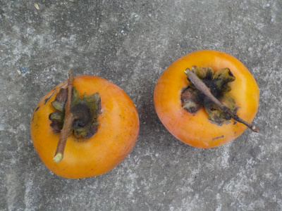
収穫し忘れで熟れてしまいました。甘いですけど、ちょっと硬いくらいが美味しい気がします。
2023/09/24
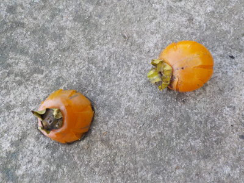
色々理由があるんでしょうが、毎年柿の実は結構落ちます。
これがもうちょっとしたら腐敗して臭うんだろうな。
片づければいいんですけど、面倒なので放置してます。
2023/07/23
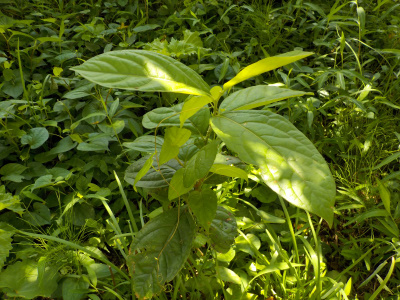
たぶん去年に芽が出たのが、今年大きくなったんだと思います。
ここは木の下でこのまま育てるわけにはいかないです。ひっこ抜いて鉢植えにしたいけど面倒だなー。そこそこ大きいのでたぶん根っこを切っちゃうんだろうな。
わざわさ鉢に移して枯らしたらガッカリだなーとか思うと、諦めた方がいいかな。
2022/11/03
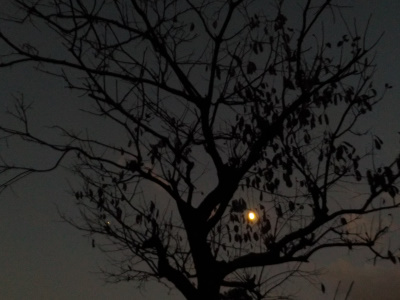
残っていた柿を全部収穫して、その後剪定をしました。
切りたい枝が沢山残っていますが、時間が足りなかったのでまた今度にします。
2022/10/16
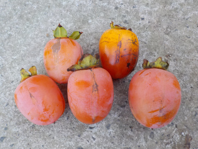
先週やった冷凍柿が美味しかったので、また熟柿を採りました。
凍った柿からヘタを取るのが少し手間がかかったので、ヘタを取ってから冷凍しようと思います。
2022/10/10
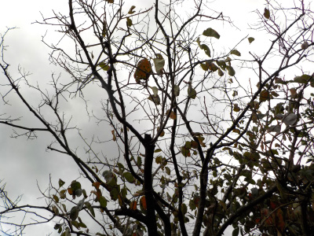
この甘柿は今年は1つも実が出来ませんでした。
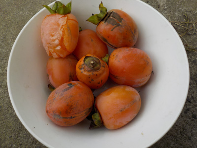
他の柿の木も実が少ないです。
普段は食べない甘熟の渋柿を収穫しました。このままだと柔らか過ぎて皮もむけないので、冷凍して食べてみようと思ってます。
2021/10/17
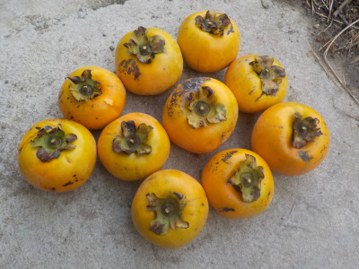
2本甘柿が植えてあるんですが、1本は実が1つも成りませんでした。たぶん毛虫のせい。
残った1本の柿を収獲しました。10個です。
数が少ないので、大切に味わって食べようと思います。
2021/06/20
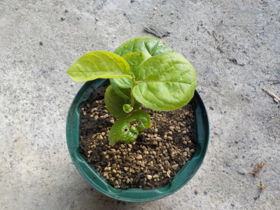
順調に成長しているので鉢を大きくしました。
もっと大きくなるのを期待しています。
2021/04/04
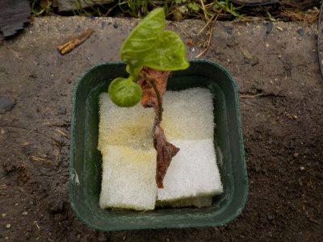
柿の水耕栽培を1年しましｔが、ほとんど成長しませんでした。
このまま育てても枯れると思うので土に植替えしました。
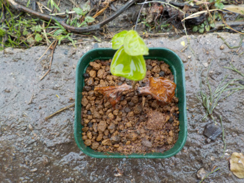
去年土に植えたのは最近見ていないので枯れたのかな？
2020/11/01
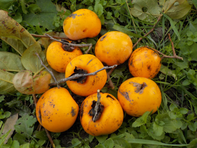
今年の柿は小さくて少量です。
熟れていそうなものを収獲しました。
食べたら少し渋かったです。残念な年でした。
2020/10/18
渋柿採りと剪定をしました。
2020/04/18
柿を1本土植えにしました。
2020/03/22
柿の苗が枯れました。
2020/03/14
柿を１本屋外に出しました。
2020/02/15
柿の種の殻が割れました。
2020/01/11
柿の種から根っこが出ました。
2019/11/13
柿の種をウールマットに蒔きました。
2019/11/09
柿がドンドン熟れています。
2019/10/13
今年の柿はいまいちでした。
2019/07/21
柿が大量で重そうです。
2018/10/27
今週は柿三昧です。
2018/05/19
柿の花をじっくり見ました。
2017/10/14
柿が熟れました。
2015/09/27
今年の柿はさっぱりです。
2014/10/18
甘柿を今年初収穫しました。
2014/09/27
渋柿が豊作です。
2014/07/26
セミは柿の木が好きですね。
2013/10/20
柿が美味しくなりました。
2013/09/28
柿の葉が紅葉しました。
2013/09/16
台風で柿の実が落ちた。
畑仕事じゃないよ。